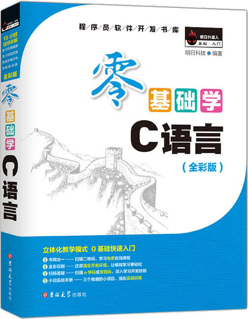

首页 > 书籍下载
《零基础学C语言(全彩版)》PDF下载（高清完整版）
|  | 作者：明日科技(Mingri Soft) |
| 出版时间：2017年10月01日 | |
| 出版社：吉林大学出版社 | |
| 书号ISBN：9787569208535 | |
| 总页数：432 | |
| 总字数：80W |
这是一本非常经典的 C 语言畅销书，专为零基础、想入门 C 语言编程的初学者研发，内容通俗易懂，笔风生动有趣。
这里提供的是《零基础学C语言（全彩版）》的高清 PDF 下载，内容完整，附带目录标签。
这本书最大的特点，就是从初学者的角度讲解 C 语言的每个知识点，同时附带大量的实例和一个完整的项目（学生信息管理系统），可以帮助初学者更好地巩固学到的知识，快速提升编程能力。
很多读完这本书的读者都给出了好评，比如：
一个月看完了，书中的代码百分之九十都在电脑上敲了一遍，适合新手集中时间快速入门练习快餐书，指针的章节看了两遍，例子丰富，套接字那章需要有一些网络基础比较难理解，字图结合着理解，总体上很棒。
还有一位初学者是这样评价的：这本书由浅入深，循序渐进，适合零基础学者，并且书中的每一章节都有丰富的实例，能够快速入门，比较适合边学边练。
作为一名老程序员，强烈建议初学者入门编程选择《零基础学C语言（全彩版）》这样的书籍，实现快速入门。在此基础上，有时间可以继续去看 《C Primer Plus》这本书，更深层次地去理解 C 语言。书籍目录
- 第1章 C语言概述
- 1.1 C语言的发展史
- 1.2 C语言的特点
- 1.3 Visual C++ 6.0开发环境
- 1.4 一个简单的C程序
- 1.5 一个完整的C程序
- 1.6 C语言程序的格式
- 1.7 小结
- 第2章 算法
- 2.1 算法的基本概念
- 2.2 算法的描述
- 2.3 小结
- 第3章 C语言基础
- 3.1 关键字
- 3.2 标识符
- 3.3 数据类型
- 3.4 常量
- 3.5 变量
- 3.6 变量的存储类别
- 3.7 混合运算
- 3.8 难点解答
- 3.9 小结
- 第4章 运算符与表达式
- 4.1 表达式
- 4.2 赋值运算符与赋值表达式
- 4.3 算术运算符与算术表达式
- 4.4 关系运算符与关系表达式
- 4.5 逻辑运算符与逻辑表达式
- 4.6 位逻辑运算符与位逻辑表达式
- 4.7 逗号运算符与逗号表达式
- 4.8 复合赋值运算符
- 4.9 难点解答
- 4.10 小结
- 第5章 常用的数据输入/输出函数
- 5.1 语句
- 5.2 字符数据输入/输出
- 5.3 字符串输入/输出
- 5.4 格式输出函数
- 5.5 格式输入函数
- 5.6 难点解答
- 5.7 小结
- 第6章 选择结构程序设计
- 6.1 if语句
- 6.2 if语句的基本形式
- 6.3 if语句的嵌套
- 6.4 条件运算符
- 6.5 switch语句
- 6.6 if…else语句和switch语句的区别
- 6.7 小结
- 第7章 循环控制
- 7.1 循环语句
- 7.2 while语句
- 7.3 do...while语句
- 7.4 for语句
- 7.5 3种循环语句的比较
- 7.6 循环嵌套
- 7.7 转移语句
- 7.8 难点解答
- 7.9 小结
- 第8章 数组
- 8.1 一维数组
- 8.2 二维数组
- 8.3 字符数组
- 8.4 多维数组
- 8.5 数组的排序算法
- 8.6 字符串处理函数
- 8.7 数组应用
- 8.8 小结
- 第9章 函数
- 9.1 函数概述
- 9.2 函数的定义
- 9.3 返回语句
- 9.4 函数参数
- 9.5 函数的调用
- 9.6 内部函数和外部函数
- 9.7 局部变量和全局变量
- 9.8 函数应用
- 9.9 难点解答
- 9.10 小结
- 第10章 指针
- 10.1 指针相关概念
- 10.2 数组与指针
- 10.3 指向指针的指针
- 10.4 指针变量作函数参数
- 10.5 返回指针值的函数
- 10.6 指针数组作为main函数的参数
- 10.7 小结
- 第11章 结构体与链表
- 11.1 结构体
- 11.2 结构体数组
- 11.3 结构体指针
- 11.4 包含结构的结构
- 11.5 链表
- 11.6 链表相关操作
- 11.7 难点解答
- 11.8 小结
- 第12章 共用体与枚举类型
- 12.1 共用体
- 12.2 枚举类型
- 12.3 难点解答
- 12.4 小结
- 第13章 位运算
- 13.1 位与字节
- 13.2 位运算操作符
- 13.3 循环移位
- 13.4 位段
- 13.5 难点解答
- 13.6 小结
- 第14章 预处理
- 14.1 宏定义
- 14.2 #include指 令
- 14.3 条件编译
- 14.4 小结
- 第15章 文件
- 15.1 文件概述
- 15.2 文件基本操作
- 15.3 文件的读写
- 15.4 文件的定位
- 15.5 难点解答
- 15.6 小结
- 第16章 存储管理
- 16.1 内存组织方式
- 16.2 动态管理
- 16.3 内存丢失
- 16.4 难点解答
- 16.5 小结
- 第17章 网络套接字编程
- 17.1 计算机网络基础
- 17.2 套接字概述
- 17.3 套接字函数
- 17.4 难点解答
- 17.5 小结
- 第18章 学生成绩管理系统
- 18.1 需求分析
- 18.2 系统设计
- 18.3 功能设计
- 18.4 小结
书籍下载
一键登录，免费下载完整版 PDF，文件名称：《零基础学C语言(全彩版)》.pdf